_____________________________________________________________________________________________________________________________________________________
_____________________________________________________________________________________________________________________________________________________
←
OUR PRODUCTS AND SERVICES
_____________________________________________________________________________________________________________________________________________________
(1.)FIRE EXTINGUISER:
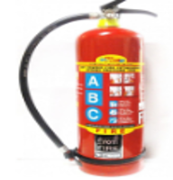
1. ABC Type Fire Extinguishers
Designed for: Class A, Class B, and Class C fires.
Best Use: This is a highly versatile, multi-purpose dry chemical extinguisher. It is effective on ordinary combustibles like wood and paper (Class A), flammable liquids like gasoline and oil (Class B), and energized electrical equipment (Class C).
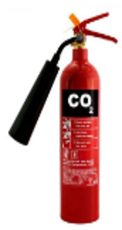
2. CO2 (Carbon Dioxide) Type
Designed for: Class B and Class C fires.
Best Use: Ideal for electrical fires (Class C) and flammable liquids (Class B). Because it uses a heavily pressurized gas that rapidly cools and displaces oxygen, it leaves no residue. This makes it a standard choice for server rooms, laboratories, and areas with sensitive electronics.
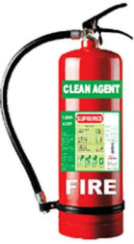
3. Clean Agent
Designed for: Class A, Class B, and Class C fires.
Best Use: Similar to CO2, clean agent extinguishers discharge a non-conductive, non-corrosive gas (such as Halotron or Novec 1230) that interrupts the chemical reaction of a fire. They are safer for human exposure than CO2 in enclosed spaces and leave absolutely no residue, making them perfect for protecting highly valuable assets, museums, and data centers.
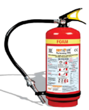
4. Foam Type (Mechanical Foam)
Designed for: Class A and Class B fires.
Best Use: Highly effective on flammable liquid fires (Class B). The foam nozzle aerates the extinguishing agent, creating a thick blanket over the liquid that cuts off oxygen and prevents re-ignition. It also works well on ordinary combustibles (Class A) due to its high water content. It is strictly not for use on electrical fires.
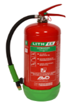
5. Lithium Fire Extinguisher
Designed for: Lithium-ion battery fires or Class D (combustible metal) fires.
Best Use: Standard extinguishers struggle to put out lithium-ion battery fires (like those in laptops, phones, or EVs) because the batteries undergo "thermal runaway" and generate their own oxygen. Specialized lithium extinguishers often use an agent like Aqueous Vermiculite Dispersion (AVD) to dramatically cool and encapsulate the battery. If the hazard involves raw lithium metal, a specialized Class D dry powder extinguisher is required to smother the metal safely.
(2.)FIRE DETECTION & ALARM SYSTEM
This section highlights the company's technical capabilities in supplying, installing, and programming automated life-safety networks.
When an alarm triggers, the exact location (e.g., "Room 402 Smoke Detector") is displayed, making it critical for large or complex facilities.
Building Management System (BMS):
The company integrates fire alarms with the facility's overarching BMS. During a fire, this integration allows the system to automatically perform actions like shutting down HVAC systems (to prevent smoke spread), recalling elevators to the ground floor, and unlocking access-controlled doors for evacuation.
Public Address (PA) Systems: Beyond standard sirens, the company supplies and installs PA systems. These are crucial for broadcasting clear, pre-recorded or live voice instructions to guide occupants safely out of the building during an emergency.
PESO-Approved Gas Leak Detectors: They provide detectors specifically certified by the Petroleum and Explosives Safety Organisation (PESO) to monitor for hazardous gas build-ups before a fire or explosion can occur.
This includes monitoring for:
- CNG (Compressed Natural Gas)
- PNG (Piped Natural Gas)
- LPG (Liquefied Petroleum Gas)


ALARM SYSTEM FIRE FIRE DETECTION SYSTEM
(3.) FIRE SUPRESSION SYSTEM
The third document outlines automated systems designed to actively extinguish or control fires without requiring manual intervention.
Automatic Fire Suppression System: This broad category includes systems that automatically activate when specific heat or smoke thresholds are met to suppress hazards across large areas.
Kitchen Fire Suppression System: These are heavy-duty wet chemical systems designed to target commercial cooking environments, dispensing specialized agents over deep fryers, grills, and exhaust hoods to neutralize grease fires.
Tube based Fire Suppression System: These utilize a pressurized, heat-sensitive polymer tube to detect and suppress fires in highly confined micro-environments, such as inside electrical distribution cabinets, server racks, or CNC machinery.
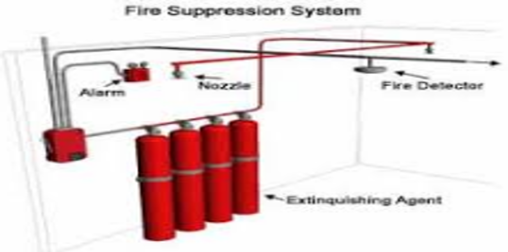
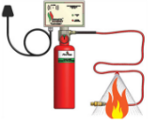
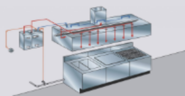
FIRE SUPRESSION SYSTEM KITCHEN FIRE SUPRESSION SYSTEM TUBE BASED FIRE SUPRESSION SYSTEM
HYDRANT & SPRINKLER SYSTEM
This covers the heavy-duty, water-based infrastructure used to control large-scale fires. The company supplies and installs all types of related materials.
Hydrant Valves & Hose Boxes: The critical connection points to the pressurized water main (hydrant valves) and the wall-mounted protective cabinets (hose boxes) used to store the equipment safely on-site.
Hose Reels Drum Set & Canvas Pipes: The water delivery mechanisms. Hose reels offer a semi-rigid hose for immediate use by building occupants, while canvas pipes (lay-flat hoses) are unrolled by emergency responders to deliver massive volumes of water.
Branch Pipes & Water Velocity Nozzles: The attachments fitted at the end of the hoses. Branch pipes allow operators to direct the flow, and velocity nozzles control the water's speed and pattern (e.g., solid stream versus wide fog).
Sprinklers & Sprinkler Alarm Valves: The automated ceiling-mounted heads (sprinklers) that activate via heat, and the specialized valves (sprinkler alarm valves) that detect water flow when a sprinkler opens, simultaneously triggering the fire alarm.
Deluge Valves: Unlike standard sprinklers that open individually, deluge valves are used in systems where all sprinkler heads are open. When triggered, the deluge valve releases a massive volume of water to flood the entire protected area simultaneously, which is critical for highly flammable industrial zones.
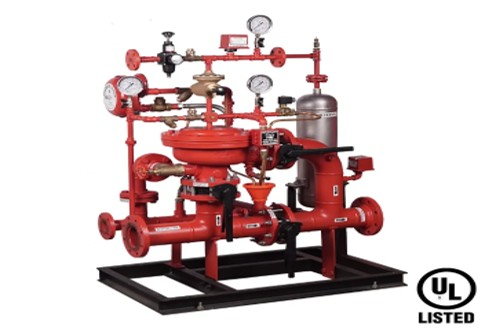
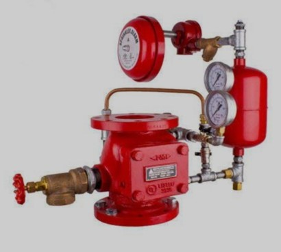

DELUGE VALVE SET SPRINKLER ALARM VALVE WATER MONITOR
(5.) SAFETY SIGNAGE'S
Autoglow Signage's: The company supplies autoglow signages. Also known as photoluminescent signs, these are made from materials that absorb ambient light during normal operating hours. If the power fails, they naturally glow in the dark, ensuring that exit routes, directional arrows, and fire extinguisher locations remain highly visible without relying on electricity or batteries.
Industrial Emergency Lights: The supply includes industrial emergency lights. These are heavy-duty, battery-backed lighting units typically mounted on walls or ceilings. They are wired into the building's electrical system and are designed to automatically switch on the moment the main power supply is cut, instantly illuminating dark factory floors, warehouses, and escape corridors to prevent panic.
LED Signage's: They also provide LED signages. These are electrically powered, constantly illuminated signs (most commonly the red or green "EXIT" signs placed above doors). They use Light Emitting Diodes, which draw very little power and can easily be backed up by small internal batteries, ensuring they cut through smoke and remain visible during an emergency.
Evacuation Plans: The company supplies formal Evacuation Plans. These are strategically placed, framed graphical maps designed for building occupants. A proper evacuation plan marks the "You Are Here" point, clearly highlights the primary and secondary exit routes, indicates where the outdoor assembly points are, and notes the locations of manual fire alarm pull stations and fire extinguishers.
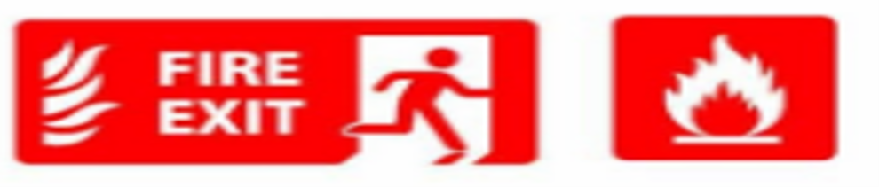
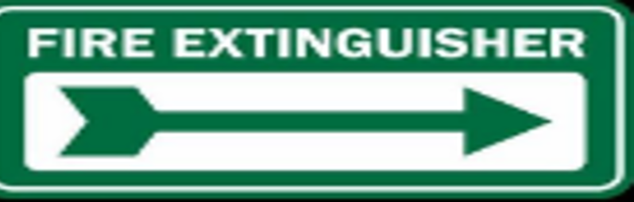
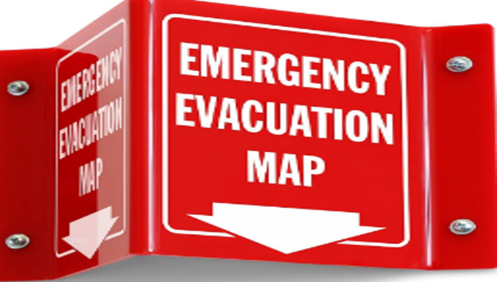
(6.) FIRE SAFETY EQUIPMENTS
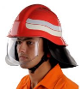
1. Fire Blanket
Visual Representation: This item is listed with a checkmark, but there is no specific picture of a fire blanket in the graphic.
Information: A fire blanket is a highly flame-resistant piece of safety equipment designed to extinguish small starting fires. It works by completely cutting off the oxygen supply to the fire, smothering it. They are typically made of materials like woven fiberglass and are often used in kitchens, laboratories, or to wrap around a person whose clothing has caught fire.
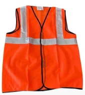
2. Safety Helmet
Visual Representation: There are two depictions of safety helmets. One is worn by a person, showing a red helmet with a large, clear protective visor pulled down over the face. The other is a standalone image in the bottom right corner, also red, featuring a clear, curved face shield and mounting brackets.
Information: Fire safety helmets are crucial for protecting the head from falling debris, impact, and extreme heat. The attached visors or face shields are equally important, as they protect the eyes and face from intense heat, sparks, flying debris, and potentially hazardous chemicals or smoke. The bright red color also helps with visibility in chaotic or smoky environments.
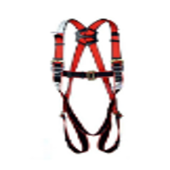
3. Safety Jacket
Visual Representation: The image shows a bright orange, sleeveless safety vest or jacket. It features thick, grey reflective stripes running vertically down the chest and horizontally across the waist.
Information: High-visibility safety jackets are essential for ensuring that rescue workers and personnel can easily be seen by their team members, especially in low-light conditions, heavy smoke, or at night. The reflective tape catches and bounces back light from flashlights or vehicle headlights, preventing accidents and helping teams keep track of one another.
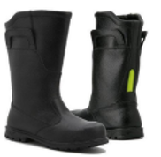
4. Safety Shoes
Visual Representation: The graphic displays a pair of tall, black safety boots. They appear to be heavy-duty, slip-on style boots with reinforced toes and thick soles.
Information: Fire and safety boots are engineered to withstand extreme conditions. They typically feature steel or composite toe caps to protect against crushing injuries from heavy falling objects. The thick soles are often puncture-resistant to protect against stepping on sharp debris like nails or glass, and they are designed to provide maximum traction on slippery or uneven surfaces. Additionally, they are made from heat and water-resistant materials.
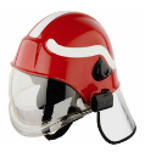
5. Harness
Visual Representation: At the bottom center, there is a full-body safety harness made of bright red webbing with black stitching and heavy-duty metal buckles and D-rings.
Information: A safety harness is a form of fall protection equipment. In fire and rescue scenarios, harnesses are critical for operations involving heights, such as rescuing individuals from multi-story buildings, working on roofs, or rappelling into confined spaces. The full-body design distributes the force of a fall across the strongest parts of the body (thighs, pelvis, waist, chest, and shoulders) to minimize injury.
(7.)CONSULTING & FIRE RISK ASSESMENT
1. Consulting & Fire Risk Assessment
A fire risk assessment is a comprehensive, systematic look at a building and its occupants to identify the potential for a fire to occur and the potential consequences if it does. Consulting in this area involves experts guiding organizations through complex fire codes, local regulations, and industry best practices. The goal is to minimize the likelihood of a fire starting and to maximize the safety of people and property if one does occur.
2. Fire Safety Audits
A fire safety audit is a thorough physical inspection of a premises. It is often required by law and serves as a reality check to ensure that all fire safety measures are not just present, but functional and compliant.
During an audit, professionals will typically evaluate:
Active Fire Systems: Testing smoke detectors, fire alarms, sprinkler systems, and ensuring fire extinguishers are appropriately placed, fully charged, and of the correct type for the area.
Passive Fire Systems: Checking the integrity of fire doors, fire-resistant walls, and ensuring that emergency lighting systems are operational.
Housekeeping: Identifying hazards such as blocked exits, improper storage of combustible materials, or overloaded electrical outlets.
Documentation: Reviewing maintenance logs for fire equipment to ensure regular servicing is taking place.
3. Risk Analysis and Safety Planning
While an audit looks at what is physically present, risk analysis focuses on the "what ifs." It is the process of evaluating the likelihood of a fire starting and the potential severity of the damage or injury it could cause.
Identifying Hazards: Locating potential sources of ignition (heaters, electrical equipment, open flames) and sources of fuel (paper, chemicals, building materials).
Evaluating the Risk: Determining who is at risk (employees, visitors, vulnerable individuals) and how quickly a fire could spread in that specific environment.
Safety Planning: Based on the risk analysis, consultants develop a strategic safety plan. This might involve recommending structural changes to the building, implementing new safety protocols for handling hazardous materials, or upgrading alarm systems to mitigate the identified risks.
4. Custom Fire Evacuation Plans
A generic plan is rarely effective during an actual emergency. Because every building has a unique layout, different occupancy levels, and varying types of hazards, evacuation plans must be custom-tailored to the specific premises.
A robust custom evacuation plan includes:
Clear Escape Routes: Detailed, easy-to-read floor plans posted throughout the building showing the primary and secondary escape routes.
Assembly Points: Designated safe areas outside the building where everyone must gather so headcounts can be taken.
Assigned Roles: Designating and training specific personnel (like Fire Wardens) to help guide others, check bathrooms or offices, and liaise with emergency responders.
Special Procedures: Creating specific evacuation protocols for individuals with disabilities or limited mobility.
Drill Schedules: Establishing a routine for conducting and evaluating fire drills to ensure everyone knows the plan by heart.
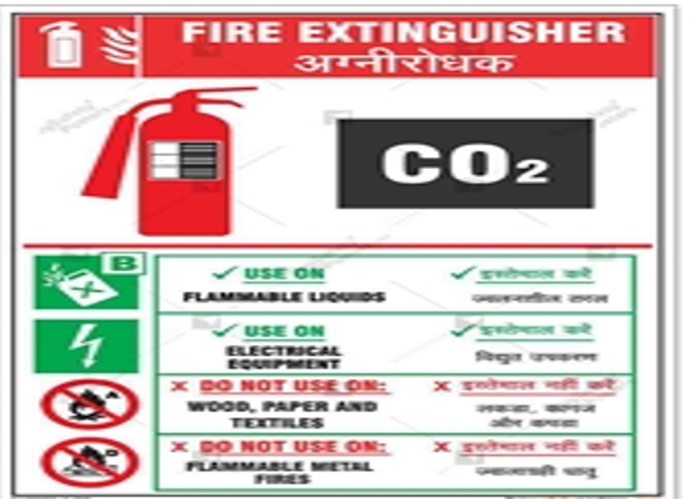
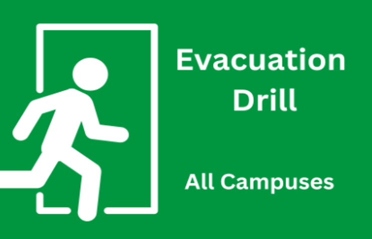
(8.)Training & Education
Even the most advanced fire suppression systems are only as effective as the people operating around them. This pillar focuses on equipping individuals with the knowledge and practical skills needed to prevent fires and respond effectively if one occurs.
Fire Safety Training for Staff and Employees: This educational component teaches employees the fundamentals of fire prevention and response in their specific workplace. Training typically covers how to identify everyday fire hazards, the correct procedures for raising the alarm, and the safe, proper use of fire extinguishers (often teaching the PASS method: Pull, Aim, Squeeze, Sweep). It empowers staff to make quick, informed decisions during the critical first few minutes of an emergency.
Evacuation Drills and Emergency Response Training: While theoretical knowledge is important, practical application saves lives. Regular evacuation drills ensure that the custom fire evacuation plan is viable and that everyone knows it by heart. This training creates muscle memory for a calm, organized exit rather than a panicked rush. It also includes hands-on training for designated emergency responders within the company, teaching them how to sweep the building, account for all personnel at assembly points, and seamlessly coordinate with arriving fire departments.
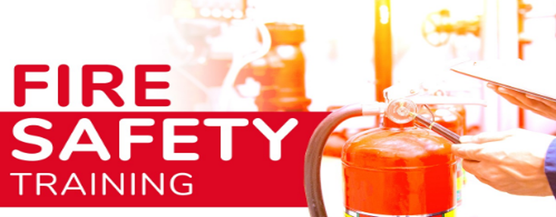